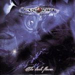

|
|
||
Cydonia : The Dark Flower (2003) |
|

http://dankeying.supereva.it |
1. Midnight Man 4:13 |
6/10 |
|
The Dark Flower es el segundo disco de la banda italiana Cydonia, liderada por el cantante Dan Keying, que además compone todas las canciones de este trabajo. Aunque en su primer álbum, Cydonia, apuntaban a un power metal progresivo, con guitarras y teclados conviviendo en buena armonía, en este disco se ha difuminado esta tendencia incorporando algunos elementos nuevos. Las canciones más destacadas del disco, son "Midnight Man", un tema contundente, de guitarras graves y estribillo interesante con algunos sonidos muy electrónicos, "Dark Flower", de sonido oscuro y algo más rápido, e "Invisible", de sonido algo difícil de caracterizar, pero con un estribillo muy pegadizo, aunque corto. En el resto del disco hay varias canciones, "One Last Crime", "Another Age", "Diamond Dust", que toman algunos elementos del nu metal, como el mismo tipo de fuerte distorsión en las guitarras, las voces más guturales con cierto estilo hip hop en contrate con pasajes más melódicos. Y de las demás casi no se puede destacar nada: mantienen todas sonidos progresivos y un aire más oscuro que el disco anterior de Cydonia, pero realmente ninguna llega a enganchar al oyente. Desde la primera canción, ya se aprecia que no estamos ante el mismo estilo que en el álbum debut de Cydonia. La mezcla de estilos, incorporando corrientes más actuales pero alejadas del auténtico metal, diluyen un disco que pasará desapercibido para los fans del metal y que tiene muy poco que ver con el anterior. |
||
Rubén Béjar |
||